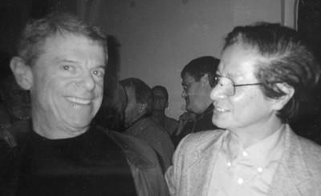
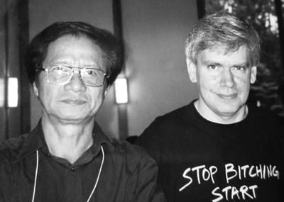
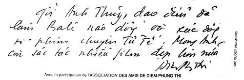

Tran van Thuy a vietmamese filmmaker described as “The Francis Ford Copola of Vietnam”
☆
(Trần Văn Thủy một nhà làm phim được mô tả như “Francis Ford Copola của Việt Nam”)
Nhưng tôi vẫn muốn nói với nhà làm phim Trần Văn Thủy rằng được xem bộ phim đó là một trong những trải nghiệm có ấn tượng mạnh nhất của tôi tại Liên hoan phim Viennale.
☆
(Joachim Schätz, nhà phê bình tự do cho Tạp chí “Falter” của thành phố Vienn)
☆
Đạo diễn Mỹ Peter David cũng là nhân vật đáng nhớ. Anh vốn nổi tiếng là người phản chiến, nổi tiếng với bộ phim bom tấn “Trái Tim Và Khối Óc” đoạt giải Oscar 1974. Peter tỏ sự thân thiện với tôi ngay từ lần đầu gặp mặt như biết nhau lâu rồi chỉ bởi anh quan tâm đến “Việt Nam War” (chiến tranh Việt Nam).
Chúng tôi được mời tới Liên hoan phim Brooklyn New York, dự tháng phim từ 1-11-2002 đến 30-11-2002.

Peter David nổi tiếng với bộ phim bom tấn “Trái Tim Và Khối Óc” đoạt giải Oscar 1974.
Tại đây trình chiếu 36 phim, cả phim tài liệu và phim truyện về đề tài Việt Nam với sự hiện diện của các tác giả tên tuổi như Olive Stone, Micheal Moor, Peter David, Francis Ford Copola... Trong poster quảng cáo Liên hoan phim Brooklyn, khi giới thiệu về Trần Văn Thủy người ta viết: Tran van Thuy a vietmamese filmmaker described as “The Francis Ford Copola of Vietnam” (Trần Văn Thủy một nhà làm phim được mô tả như “Francis Ford Copola của Việt Nam”) Francis Ford Copola là đạo diễn người Mỹ, nổi tiếng thế giới, đồng tác giả phim “Trung Đội” (Patton -1970), tác giả phim “Bố Già” (The Godfather -1972), “Ngày Tận Thế” (Apocalypse Now) và hàng loạt phim đoạt giải thưởng lớn.
- Thủy nghĩ sao về điều này?
- Nước Mỹ là xứ sở tự do, mọi sự đánh giá và bình luận là tùy hứng, có thể là của một cá nhân nào đó vào thời điểm nào đó, đành rằng nó được trưng lên trước đám đông để quảng cáo.
Tôi thực sự ngỡ ngàng và... xấu hổ khi có sự ví von khập khiễng quá đáng như vậy. Tôi biết mình là ai. Tôi biết Francis Ford Copola là ai, một đạo diễn vĩ đại, quyền uy, giàu có. Nhưng cũng có thể nói rằng nếu ông ấy sinh ra và làm phim ở Việt Nam thì ông ấy chưa chắc đã dám làm như tôi. Còn bà Marilyn Yoong, chủ nhiệm khoa cao học của Đại học New York, sau khi xem xong “Chuyện Tử Tế” trong khuôn khổ Liên hoan phim Brooklyn, trước đám đông, bà đã cảm kích nói rằng: “ Nhiều người Mỹ chúng ta có thành kiến Việt Nam là một đất nước khép kín, không có tiếng nói cá nhân, nhưng xem xong ‘Chuyện Tử Tế’ tôi đã nghĩ khác ....” (Người Mỹ thật nhẹ dạ cả tin. Bà không biết tác giả của nó đã lên bờ xuống ruộng như thế nào...).
☆
Bà đã gửi giấy mời tôi trở lại Mỹ vào cuối năm sau, tháng 12-2003 để tham dự một hội thảo về xã hội học.
Tôi cũng đã có mặt. Đề cương bản tham luận hiện tôi còn giữ.
Mùa đông ở bờ Đông nước Mỹ năm đó rất lạnh.
Trở lại Liên hoan phim Brooklyn New York, ở đây tôi đã gặp John Gianvito, một nhà làm phim có tiếng ở Mỹ và là người có uy tín trong việc tổ chức những sự kiện điện ảnh mang tầm Quốc tế. John xem 5 phim của tôi ở Liên hoan phim Brooklyn và ưu ái mời tôi trở lại Mỹ vào 2003. Anh mời tôi theo cái kiểu ở Việt Nam là: “Ông đến chơi với tôi nhé!” Cứ như trò đùa ấy.
Theo lời mời của John, đầu tháng 5-2003 tôi trở lại Mỹ, tới New York tham dự Hội thảo Điện ảnh Quốc tế mang tên Robert Flaherty (The 49th International Film Seminars - Robert Flaherty).
Tham dự hội thảo có gần 200 nhà làm phim độc lập trên toàn thế giới. Để có không khí như đi cắm trại, đi picnic, ban tổ chức trưng dụng toàn bộ khuôn viên rộng lớn của Đại học Vassar ở ngại ô New York nhân dịp sinh viên nghỉ hè, với rừng cây thảm cỏ, những kiến trúc độc đáo như trong truyện cổ tích.
☆
Tất cả chúng tôi đều thừa nhận rằng chưa bao giờ có một hội thảo độc đáo như thế mặc dù bản thân tôi đã may mắn có mặt ở hàng chục hội thảo khác nhau ở Đức, Pháp, Nga, Nhật, Úc... Có rất nhiều tác phẩm ấn tượng, nhiều tác giả tài năng, nhiều cách làm độc đáo. Tất cả chăm chú xem phim, hăng hái tranh luận. Tôi có cảm tưởng đây là một lớp tập huấn quốc tế về làm phim tài liệu.
John chủ trì nhiều buổi thảo luận, anh đã đặt ra cho tôi nhiều câu hỏi về phim tài liệu ở Việt Nam, về quá trình tôi thực hiện những bộ phim trình chiếu ở đó. Kết thúc hội thảo Ban Tổ chức trao danh hiệu “Witnessing the World” (Chứng Kiến Thế Gian) cho đạo diễn Nhật Bản Toshi Moto và tôi.
Đạo diễn Toshi Moto năm đó đã 75 tuổi, trình chiếu 5 phim nhựa dài của ông. Tháp tùng ông tới New York là vợ ông và một đoàn làm phim về ông. Rất tiếc về lại Nhật được 3 năm thì ông qua đời.
John Gianvito đặc biệt quan tâm đến “Chuyện Tử Tế”. Cũng không có gì lạ, bởi ở nhiều đại học Mỹ, một số phim của tôi trong đó có “Chuyện Tử Tế” nằm trong sách giáo khoa của trường và được chiếu đi chiếu lại cho nhiều thế hệ sinh viên. Tôi cũng rất bất ngờ, 5 năm sau cuộc Hội thảo Robert Flaherty, năm 2008 John đã mang “Chuyện Tử Tế” qua Áo, chiếu ở Festival Viennale.
Dưới đây là trích đoạn bức thư của John Gianvito gửi cho tôi nói về việc “Chuyện Tử Tế” được trình chiếu ở Viennale:
“...I have spent as much of my adult creative life as a film curator as well as a film maker, it was suggested that I could program one or two events at this year’s festival of the works of others... Bring your film, Chuyen Tu Te into the selection was for me a simple and powerful method of restoring the dignity and full dimensionality of the Vietnamese people after bearing witness to the previous films with their brutal words and deeds.
Both in front of your camera and behind it, Chuyen Tu Te enables us to encounter hearts who have somehow managed, in the face of the most unimaginable atrocities, to maintain a place for compassion to all. The ‘truths’ that your film explores are not easy ones and among its strengths is its capacity for self-criticism and for criticism of the state in some aspects. Without this broad and honest critique Chuyen Tu Te might have been lost to the dust-bin of history, one more propaganidistic diatribe. Not is it a naive film. While anger is not explicitly manifest there can be little doubt about the ‘mystery’ of why so many of your friends and colleagues, artists and filmmakers, were dying early of cancer-related illness. Both Agent Orange and all those responsible for its use....
I have many thoughts as I think you know, about the topic of what is a political film and what forms of socially-engaged cinema are the most effective. Among them is my clear opinion that any film that re-awakens us to our humanity is in essence a political film. Because every day we are bombarded with experiences that result in nullify our senses, in shutting us down not only to the profound misery that unfolds every second or every day in much of this planet, but shutting us down to our own awareness of self and soul. This many years later, Chuyen Tu Te continues to revivify and I can report that a number of inpiduals who attended the screening in Vienna had this feeling...”
“...Tôi đã dành phần lớn quãng đời trưởng thành của mình với tư cách một nhà làm phim và một nhà giới thiệu phim, họ có yêu cầu tôi lập chương trình cho một vài sự kiện trong liên hoan này bao gồm các bộ phim của một số đạo diễn và nhà làm phim khác.

John Gianvito: “‘Chuyện Tử Tế’ đã giúp chúng tôi gặp được những tấm lòng vẫn lưu giữ được sự nhân từ đối với người khác, ngay cả trước những nghịch cảnh éo le ngoài sức tưởng tượng của con người.”
...Việc đưa bộ phim ‘Chuyện Tử Tế’ của anh vào, đối với tôi, là một cách đơn giản song hữu hiệu để xây dựng lại nhân phẩm và hình dáng con người của người Việt Nam.
Ở phía trước và phía sau máy quay của anh, ‘Chuyện Tử Tế’ đã giúp chúng tôi gặp được những tấm lòng vẫn lưu giữ được sự nhân từ đối với người khác, ngay cả trước những nghịch cảnh éo le ngoài sức tưởng tượng của con người. Những ‘sự thật’ bộ phim của anh đưa ra không dễ dàng hiểu được, và một trong những điểm mạnh nhất là cách nó tự phê phán bản thân và phê phán nhà cầm quyền trên một số lĩnh vực. Nếu không có được điều này, có lẽ ‘Chuyện Tử Tế’ đã bị coi là một bộ phim mang tính tuyên truyền khác và rơi vào quên lãng. Song đấy cũng không phải là một bộ phim quá ‘hiền lành’; mặc dù bộ phim không thể hiện trực tiếp sự phẫn nộ, mọi người đều hiểu được vì sao nhiều người bạn và đồng nghiệp của anh, nghệ sĩ cũng như các nhà làm phim, lại chết sớm vì ung thư đến vậy. Chất độc da cam và những người đã sử dụng nó trong cuộc chiến tranh...
Tôi nghĩ rằng anh biết tôi suy nghĩ rất nhiều về chủ đề thế nào là một bộ phim chính trị, và những thể loại phim như thế nào tác động có hiệu quả đến xã hội nhất. Một trong những quan điểm rõ ràng của tôi là bất kỳ bộ phim nào làm thức tỉnh con người thì thực chất đều là phim chính trị. Bởi vì hàng ngày chúng ta bị tra tấn bởi những sự việc diễn ra làm giác quan của chúng ta bị chai lì đến mức nhắm mắt làm ngơ không những đối với những nỗi đau khôn xiết diễn ra từng giây từng ngày trên khắp hành tinh này mà còn đối với việc nhận biết chính bản thân mình và tâm hồn mình. Sau nhiều năm, ‘Chuyện Tử Tế’ vẫn tiếp tục lay động chúng ta, và tôi có thể nói rằng một số người đã xem bộ phim này tại Viennale cũng có cảm tưởng như vậy.
Trước hết, tôi cần nói để anh biết là vé xem bộ phim này đã bán hết rất nhanh và rạp chiếu phim lớn đã kín người (tôi đoán khoảng 300-400). Tôi cũng rất mừng là hoàn toàn tình cờ, nhà làm phim Joseph Strick đã đạo diễn bộ phim được giải thưởng Oscar ‘Phỏng vấn các Cựu chiến binh Mỹ Lai’ cũng có mặt tại Liên hoan phim và lên diễn đàn cùng với tôi trước buổi chiếu ‘Chuyện Tử Tế’. Sau đó ông ta bảo tôi nói với anh rằng bộ phim làm ông ấy rất xúc động và cám ơn anh đã cho ông ta cơ hội được thấy một phần cuộc sống và tranh đấu của người dân Việt Nam trong những năm sau Chiến tranh. Một nhà sưu tầm phim người Đức có tên tuổi là Olaf Moller cũng rất ấn tượng với bộ phim của anh và sau đó có viết thư nói với tôi (ngoài một số nhận xét khen một bộ phim của tôi) rằng ‘Chuyện Tử Tế’ là một bất ngờ đối với khá nhiều người và đó là điều mà các nhà làm phim khác nói với tôi. Sau cùng, gần đây tôi có nhận được một bức thư tuyệt vời từ một người không quen biết muốn tôi chuyển tới anh những cảm xúc mạnh mẽ của ông ấy về bộ phim của anh...”
(Nguyễn Quang Dy chuyển ngữ)
John Gianvito đã yêu cầu khán giả cho nhận xét về phim “Chuyện Tử Tế”. Sau đây là trả lời của một nhà phê bình tự do.
Dear John Gianvito,
This is a somewhat belated reaction to your invitation for a feedback concerning Tran Van Thuys “The Story of Kindness”. I had to leave quickly after the Vietnam screening, so I couldn’t approach you directly. But I still want to tell Tran van Thuy the filmmaker that it was among my most stunning viewing experiences at this Viennale: For the first minutes of the video’s screening, I had no idea where this was supposed to be going. But while the essaystic flow of thoughts never seems to settle for one definite destination until the very end, what I gradually came to understand, see and feel in the following half hour was a startlingly purposeful and powerful exploration of a scarred country.
In its exploration of the ruptures in Vietnamese society, this must be one of the most devastatingly gentle films I have ever seen, and this without making the kindness and gentleness expressed register just as a sarcastic ploy.
I hope these rather awkward notes are of any interest to you.
Greetings,
Joachim Schätz
(freelance critic for the Viennese city mag “Falter”)
John Gianvito thân mến,
Thư trả lời này của tôi đến hơi chậm để đáp ứng yêu cầu của ông muốn tôi phản hồi về bộ phim “Chuyện Tử Tế” của Trần Văn Thủy. Hôm đó tôi phải đi ngay sau khi xem phim Việt Nam, nên không thể trực tiếp gặp ông. Nhưng tôi vẫn muốn nói với ông và nhà làm phim Trần Văn Thủy rằng được xem bộ phim đó là một trong những trải nghiệm có ấn tượng mạnh nhất của tôi tại Liên hoan phim Viennale. Trong vài phút đầu của bộ phim, tôi không hiểu nó sẽ dẫn tôi đến đâu. Tuy dòng suy tư trong mạch phim dường như không chịu dừng lại tại một điểm đến cố định nào cho đến cuối phim, nhưng điều mà tôi đã dần hiểu ra, thấy được và cảm nhận được ở 30 phút tiếp theo là một sự tìm tòi mãnh liệt và có chủ định một cách đáng kinh ngạc về đất nước đầy thương tích này.
Để tìm tòi những rạn nứt trong xã hội Việt Nam, đây là một trong những bộ phim nhẹ nhàng một cách khốc liệt nhất mà tôi đã từng được xem, và điều này không làm cho biểu hiện tử tế và nhẹ nhàng gây ấn tượng như một thủ pháp mỉa mai châm chọc.
Mong rằng mấy lời nhận xét vụng về này có ích đối với ông.
Xin chào
Joachim Schätz
(nhà phê bình tự do cho Tạp chí “Falter” của thành phố Vienn)
(Nguyễn Quang Dy chuyển ngữ)
☆
Tôi xin thưa, chưa bao giờ tôi dám nhận “Chuyện Tử Tế” là bộ phim hay, tôi chỉ nghĩ nó cần và có ích. May mà thiên hạ hứng thú với nó. Bà Điềm Phùng Thị, một tên tuổi lớn của nền điêu khắc thế giới, từng được ghi danh trong Từ điển La Rousse , khi ở Pháp xem phim xong đã gửi cho tôi mấy dòng ghi trên một tấm poster: “ Gởi Anh Thủy, đạo diễn đã làm Balê náo động và xúc động về phim ‘Chuyện Tử Tế’...”
Tôi vẫn biết yêu ghét khen chê là chuyện thường tình bởi vậy tôi không thấy sung sướng khi được khen và cũng chẳng buồn rầu khi bị chê. Tôi chỉ làm theo sự mách bảo của con tim mình. Cũng chẳng ít người không ưa phim của tôi. Có một chuyện, một kỉ niệm nhỏ liên quan đến sự khen chê. Tôi phân vân mãi không biết có nên kể ra hay không:
...Ở xưởng phim chúng tôi khi tổng kết chất lượng phim cuối năm đó, nhiều đồng nghiệp cho “Chuyện Tử Tế” điểm cao; nhưng đạo diễn nghệ sĩ nhân dân Ngọc Quỳnh cho điểm 0 (zero), mặc dù có qui định rằng phim đã được xuất xưởng cho điểm tối thiểu là 5 điểm, tối đa là 10 điểm. Anh cho rằng bộ phim này không đúng đường lối của Đảng. Phải nói rằng anh là người cẩn mực, sinh hoạt Đảng và đóng Đảng phí đều đặn. Nhà hết tiền nhưng anh bắt chị Nguyệt, vợ anh đưa đủ tiền để anh đóng Đảng phí.
☆

Cuối đời anh đau yếu, không đi được nữa, anh yêu cầu Chi bộ Đảng đến nhà anh họp bên giường bệnh. Anh là người gương mẫu và tin theo Đảng đến giờ phút cuối cùng. Bây giờ thật hiếm có những mẫu người như anh.
Bởi vậy trong phòng truyền thống của hãng phim chúng tôi, trong các dịp lễ lạt anh vẫn được nêu lên như một tấm gương sáng, được “ngồi mâm trên” bên cạnh đạo diễn nghệ sĩ nhân dân Bùi Đình Hạc.
Khi anh qua đời, tôi là người thân duy nhất có mặt lúc thay quần áo để khâm liệm anh. Anh là mẫu người tốt của một thời.
☆
☆
☆